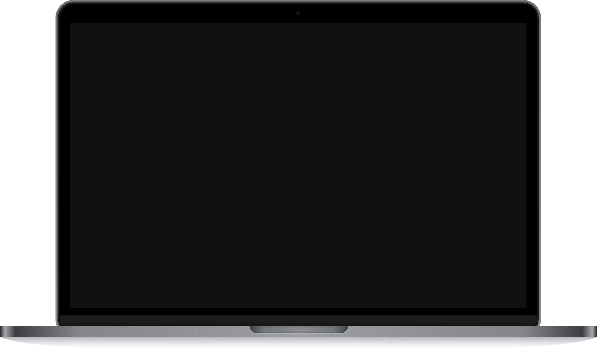
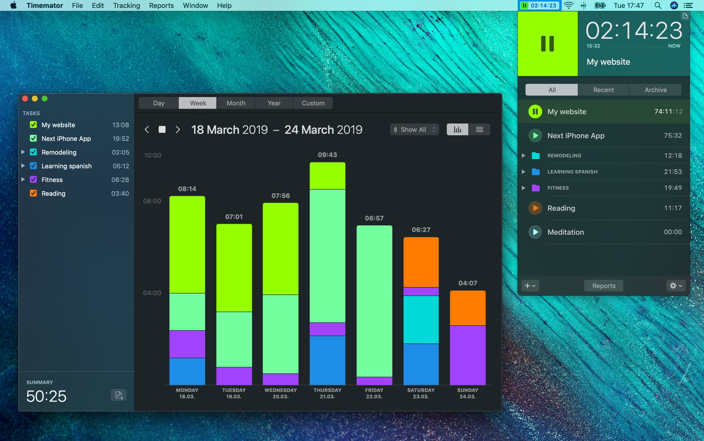

Timemator for Mac
Automate your time-tracking
and forget about the timer. Forever.


Tell Timemator which files you’re
working on or what applications
you use for your work.
Just drag &
drop
them into the Timemator window to
create your rules.
Once you open your working file or
application, Timemator will start the
timer for you
automatically!
See how Timemator
will improve your workflow:
Timemator knows when you design in your favorite
layout app,
have your project files open, search for
inspiration or have a
meeting with your client.


... and many other.
Requires macOS High Sierra or higher
Review and Report
Control every single second

Chart
List
Get an overview and compare your tracked time on a beautiful
chart. Sessions can be grouped by day or
month.
Traditional time-keeping
In addition to Auto-tracking you can still use the traditional timer
with the start / pause button,
manually add timing sessions or edit
existing ones.
Billable hours
Define your hourly rate to the tasks and let Timemator calculate
your revenue. In the end, you can
just export a report and send it
directly to your client.
Flexible task structure
Do you have projects and tasks? Or maybe clients,
their projects, tasks, and sub-tasks? Or just
simple
trackable items? It doesn’t matter: Timemator
supports any structure you define. Just use its
folders
and tasks as you do in the Finder.